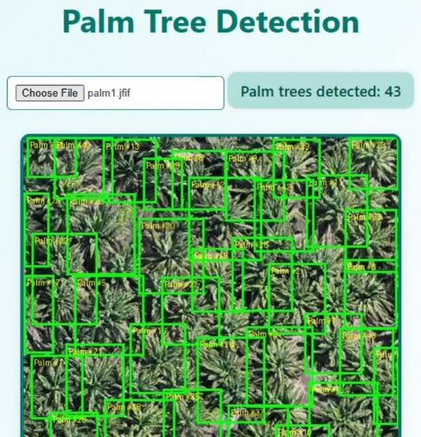

🌴 Palm Tree Detection Web App

This is a simple web application that detects and counts the number of palm trees in an uploaded image. The app uses a custom-trained object detection model hosted on Roboflow and serves predictions through a FastAPI backend. The result is a bounding-box-annotated image along with a count of detected palm trees.
🚀 Demo
👉 Watch the Demo Video🧠 Tech Stack
- Frontend: HTML, CSS, JavaScript
- Backend: Python, FastAPI
- Model Inference: Roboflow API
- Image Processing: Pillow (PIL)
- Communication: Fetch API with CORS enabled
📦 Features
- Upload an image from your device
- Sends image to backend and Roboflow model
- Detects and counts palm trees
- Displays the total count and the image with bounding boxes
⚙️ Requirements
✅ Backend Setup (FastAPI + Roboflow)
- Python 3.8 or higher
- Install required Python packages:
pip install fastapi uvicorn pillow python-multipart inference-sdk - Run the backend server:
uvicorn main:app --reload
Note: Make sure to replace the api_key and model_id in
main.py with your own Roboflow credentials if you fork this project.
✅ Frontend Setup
No build tools required. Just open index.html in your browser, or use a local server (e.g. Live
Server extension in VS Code).
Make sure the backend server is running locally at: http://localhost:8000/detect/